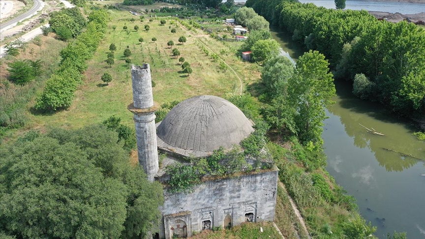
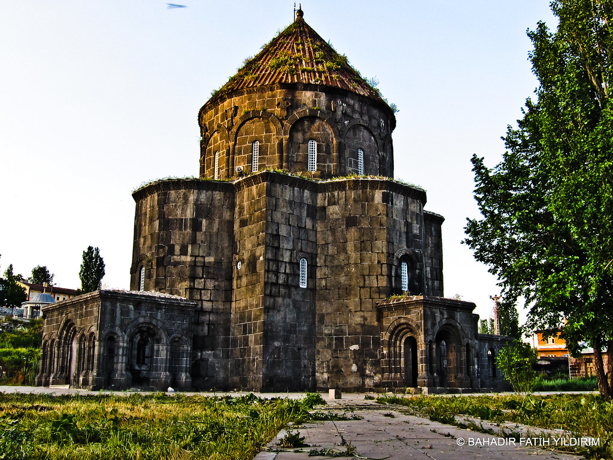
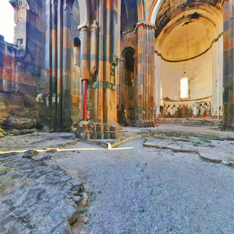

Kars’ın manevi simgelerinden biri olan Evliya Camii, şehre yüksekten bakan konumuyla hem ruhani hem de estetik bir atmosfer sunar.
Adres: Evliya Tepesi, Merkez/Kars
İbadet Durumu: Aktif cami
Ziyaret Saatleri: Gün boyu açık (namaz saatlerine uygun)

10. yüzyılda kilise olarak inşa edilen bu yapı, mimarisiyle büyüler. Günümüzde cami olarak kullanılmaktadır.
Adres: Kaleiçi Mah., Merkez/Kars
İbadet Durumu: Aktif cami
Ziyaret Saatleri: Her gün 08:30 – 18:00

Ani Antik Kenti’nde yer alan bu katedral, 11. yüzyıldan kalma mimarisiyle hem dini hem tarihi bir yapıttır.
Adres: Ani Harabeleri, Ocaklı Köyü/Kars
Ziyaret Saatleri: 09:00 – 19:00 (Yaz dönemi)
Müze Kart: Geçerli